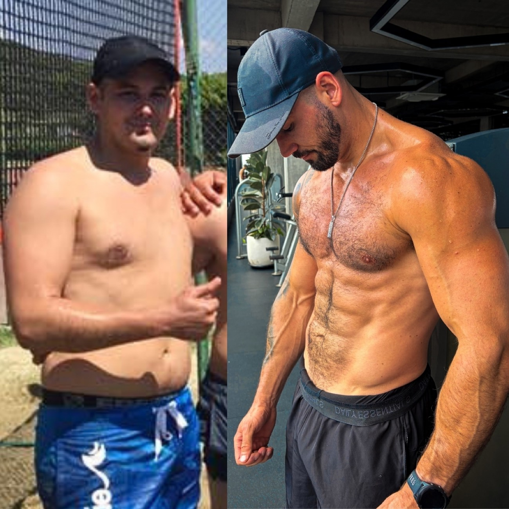

Why I built this
I know this process because I lived it.
I was the man out of shape, out of alignment and out of excuses. My lowest point wasn't the weight. It was knowing I was capable of more and watching myself settle anyway.
The way out wasn't motivation. It was standards. Training, nutrition, routine and honesty, built one day at a time until the man in the mirror matched the man I knew I could be.
Years of coaching taught me why most men fail: too much guesswork, too much intensity with no structure, and programs built for someone else's life. My system removes all three.
What I stand for now is simple. Honesty over hype. Execution over information. Standards over motivation.
“I don't coach men to temporarily look better. I coach them to permanently raise their standard.”
